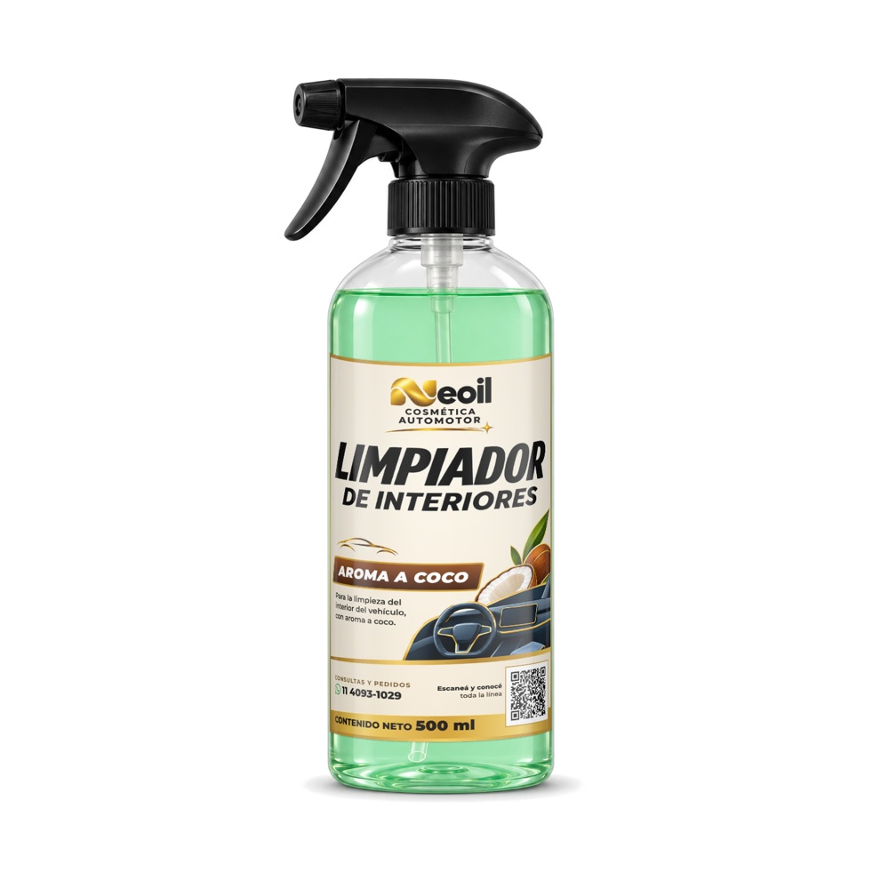

Habitáculo
Limpiador de interiores.
Limpiador para las superficies del interior del vehículo, con aroma a coco.
Contenido neto: 500 ml
Consultar por WhatsApp
Presentación.

Para qué sirve.
- Limpiar tablero, paneles de puerta y consola.
- Sacar polvo y marcas del uso diario.
- Dejar aroma a coco en el habitáculo.
Cómo se usa.
- Rociá sobre la superficie o sobre un paño de microfibra.
- Pasá el paño hasta retirar la suciedad.
- Terminá con un paño seco y limpio.